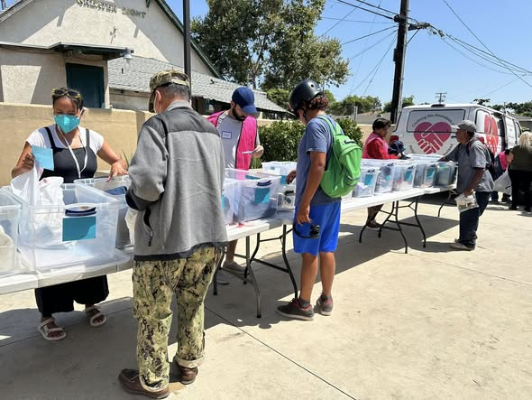

Board Oversight
Independent board guides strategy and reviews financial statements.

United Horizons Social Services Inc. is organized and operated exclusively for charitable purposes within the meaning of Internal Revenue Code 501(c)(3). EIN: 10342908. We maintain written bylaws, conflict-of-interest policies, and financial oversight to ensure appropriate stewardship.
Key board responsibilities include approving strategic direction, reviewing financials, monitoring compliance, and ensuring that all programs remain aligned to mission.
Independent board guides strategy and reviews financial statements.
Scopes, eligibility, and outcomes are published for public review.

Training and governance education help maintain high standards.